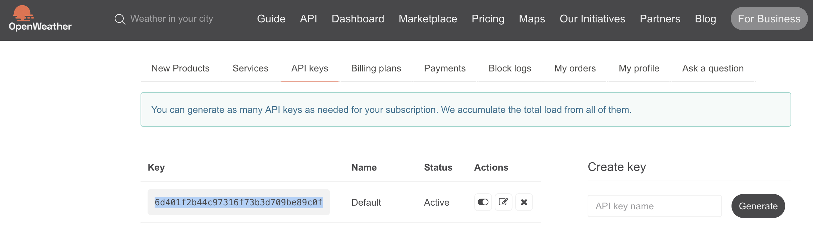

<br>
#### Week 9: Radio, WiFi, Bluetooth (IoT)
I remember royally failing at understanding how to use the Bandcamp API years ago when I tried to streamline the physical product fulfillment part of Biophilia Records. For this reason, I was determined to figure out how to use it this week. I royally failed again, because I can't figure out how to use Bandcamp's API. I was, however, able to find a different API that I did manage to understand. I clicked on the <a href="https://github.com/public-apis/public-apis">PS70 site link of public APIs</a> and found the <a href="https://https://openweathermap.org/api">Open Weather API</a>.
This week involved a lot of YouTube watching because I have no prior experience dealing with any of this. After searching for Arduino, ESP32 and API, I serendipitously found this video <iframe width="560" height="315" src="https://www.youtube.com/embed/AsNh1Z-iihw?si=NSs__E4gMVyrVaDe" title="YouTube video player" frameborder="0" allow="accelerometer; autoplay; clipboard-write; encrypted-media; gyroscope; picture-in-picture; web-share" allowfullscreen></iframe>
I want to use an LCD screen for my final project, so this API/Arduino project was appealing to me. A ESP32 board and a 2x16 LCD were used. Luckily there were I2C modules attached to the LCDs-- had there not been, I would have needed significantly more jumper cables.
It might not seem like a big accomplishment, but I am proud that I now sort of understand github file links. Prior to this week, I had no idea what I was looking at but now I know how to download the files:
<img src="../images/github.jpg" alt="github page" width="946" height="587">
In order for the API to work, I needed to open an account with Open Weather in order to be given an API key: 6d401f2b44c97316f73b3d709be89c0f
I also had to find out the coordinates for Boston, which after a quick google search, are: 42.3601° N, 71.0589° W

It was a matter of plugging in all of my variables. But there are things that I don't fully understand.
<video src="../images/IMG_4904.mp4" controls> </video>
<code>#include <WiFi.h>
#include <HTTPClient.h>
#include <ArduinoJson.h>
#include <LiquidCrystal_I2C.h>
//LCD Object (0x3F or 0x27)
LiquidCrystal_I2C lcd(0x27, 16, 2);
//Put your WiFi Credentials here
const char* ssid = "xfinitywifi_HUH_Res";
const char* password = "huhwifi9434";
//URL Endpoint for the API
String URL = "http://api.openweathermap.org/data/2.5/weather?";
String ApiKey = "6d401f2b44c97316f73b3d709be89c0f";
// Replace with your location Credentials
String lat = "42.37573";
String lon = "71.11288";
void setup() {
Serial.begin(115200);
// Setup LCD with backlight and initialize
lcd.init();
lcd.backlight();
lcd.clear();
// We start by connecting to a WiFi network
WiFi.begin(ssid, password);
while (WiFi.status() != WL_CONNECTED) {
delay(500);
Serial.print(".");
}
Serial.println("");
Serial.println("WiFi connected.");
Serial.println("IP address: ");
Serial.println(WiFi.localIP());
}
void loop() {
// wait for WiFi connection
if (WiFi.status() == WL_CONNECTED) {
HTTPClient http;
//Set HTTP Request Final URL with Location and API key information
http.begin(URL + "lat=" + lat + "&lon=" + lon + "&units=metric&appid=" + ApiKey);
// start connection and send HTTP Request
int httpCode = http.GET();
// httpCode will be negative on error
if (httpCode > 0) {
//Read Data as a JSON string
String JSON_Data = http.getString();
Serial.println(JSON_Data);
//Retrieve some information about the weather from the JSON format
DynamicJsonDocument doc(2048);
deserializeJson(doc, JSON_Data);
JsonObject obj = doc.as<JsonObject>();
//Display the Current Weather Info
const char* description = obj["weather"][0]["description"].as<const char*>();
const float temp = obj["main"]["temp"].as<float>();
const float humidity = obj["main"]["humidity"].as<float>();
lcd.clear();
lcd.print(description);
lcd.setCursor(0, 1);
lcd.print(temp);
lcd.print(" C, ");
lcd.print(humidity);
lcd.print(" %");
} else {
Serial.println("Error!");
lcd.clear();
lcd.print("Can't Get DATA!");
}
http.end();
}
//Wait for 30 seconds
delay(30000);
}
</code>
There are a few things I don't understand yet:
Why is it that I have to choose either 0x3F or 0x27 for the first coordinate of the LCD object?